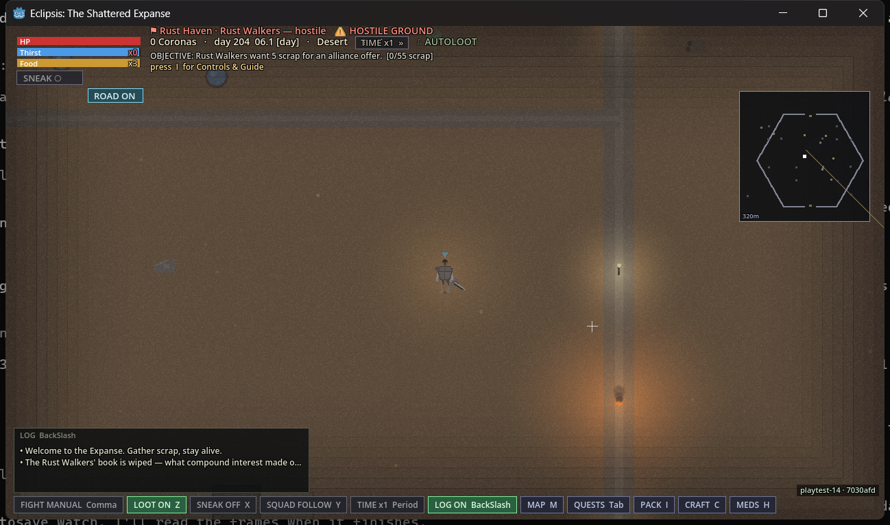
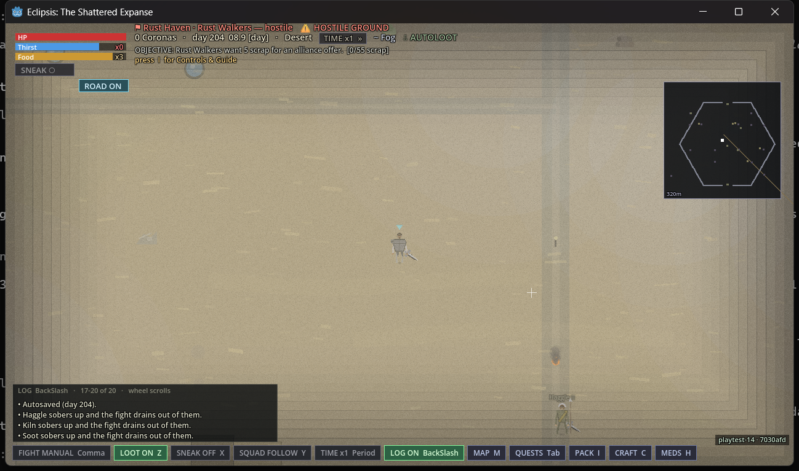

Every fix the owner asked for since playtest 12 lands here in one cut: the two-minute day is
gone, thirst and hunger are counted against the game clock, going without has a ladder under
it, a shop bill can no longer compound into a faction that wants you dead, and a sentence is
served in game days. This report says what was checked on the shipped archive, what was
measured on source with the numbers, and what nobody has sat through yet.
Cleared
Play it. The owner's own day-204 save was taken through the new load path on
the release build before he touched it: the two-million-corona book was wiped once, the real
1,135 stayed on the counter, and the second load said nothing. The clock, the autosave and the
bars were timed on the running game. Nothing was found. What the clock makes too long to sit
through is listed with its figure, not left as silence.
stamp playtest-14 · 7030afd ✓ one line on the title, the same on the HUD, the same in the log windows eclipsis_playtest-14_windows_x86_64.zip 1e295450b3cf41d178a425b57b88fbd6ee09f3dcbe1d49841c2b112677da76ae ✓ macos eclipsis_playtest-14_macos_universal.zip aea4a6cf669ae01a4d2c8d58287ed17135a11988eda73fd7306ddc078b76f3c3 ✓ linux eclipsis_playtest-14_linux_x86_64.tar.gz 79634b144d6b86a3959107b2cdb541a5a0d9c86623016ddb543a35e5a2428639 ✓ checked sha256 of each downloaded file against the release body, byte for byte; the macOS archive's binary is stored executable and ad-hoc signed
What was actually proven
Three tiers, as before. The top one is the only one that counts as a promise.
Verified on the shipped buildthe release archive, launched and driven like a player would, on a copy of the owner's real save directory
The build says which build it is. Title bottom-left, HUD, and log all read playtest-14 · 7030afd; nothing else in a corner.
Playtest 13 finds playtest 14. The previous build, booted on a save directory that had never seen the notifier, put up the card naming both builds; Later closed it, the quiet "Get it" line stayed, and the next boot asked nothing.
The owner's day-204 save opens, and the book is wiped exactly once. On load the log said "The Rust Walkers' book is wiped — what compound interest made of a shop bill was never a debt anybody could pay. What you owe is on the counter." The save written afterwards holds no credit debt, no collectors, one line of that in the Codex history, and Vex's Larder still owing its flat 1,135 with the shutters down. A second load said only "Welcome to the Expanse." The manual save and the migration marker were byte-identical afterwards. Standing with the Rust Walkers is still −100 by the owner's ruling, so the banner still reads hostile ground; a Rust Walker quartermaster walked up to talk rather than draw.
A game hour is two real minutes. The HUD clock read 06.1 on load and 08.0 four minutes later; a fresh Wanderer went from 08.1 to 12.3 in eight and three-quarter minutes.
The autosave has its own five-minute timer. "Autosaved (day 204)." at five and a half minutes into a run that never crossed a dawn, and the file's clock moved with it.
The bars drain against the game clock. Read off the save the Wanderer run wrote on quit: thirst fell 8.5 points per game hour (authored 8.33), food 4.3 (authored 4.17). Neither bar overfilled; the labels read Thirst and Food.
The start screen is still right. Blurb clear of WORLD AGE, hovering and clicking a start only selects it, the BEGIN plate names the start and clicking it began the run.
Verified against sourceheadless soaks on the landed commits, seed 0x510E5A, the same numbers before and after
The ladder under the bars, four game days without water or food (871a782): thirst empties at 12 game hours, day 2 at 24, day 3 at 36 with the bar relabelled Dehydrated; hunger 24 / 48 / 72. Day 2 costs speed and healing; day 3 costs more of both, damage dealt and skill checks; both at day 3 floors at half speed. Twelve pass-outs a day at thirst day 3, each a quarter hour, zero movement while down. Health floors at 1 and never dies of either. A real drink or meal clears the counter the same tick.
The protection ledger, read back off the owner's day-204 save (cc8a9af): the compounded 2,086,916 is wiped, the venue's 1,135 stays flat, three consecutive missed collections put a 45-corona price on you and every third miss adds another, paying at the counter lifts the shutters and the price. Levies never touch the credit book again.
Custody in game days (811254f, 9bafd61): Cell 2, Lord's Hold 4, Work Gang 7, Slaver Pen 14; the wall names the day the door opens and sitting it out opens it on that day. Killing a leader adds 90 days. A captor who hands you to another faction prices your ransom off the bounty that built the term, not the receiver's empty ledger.
The credit ledger compounds at 1 percent per game day: a Failing Bakery's inherited 40 coronas reach the collectors' line on day 41, not day 9.
The world on the long day, two game days standing still: one dawn every 48 minutes, 1.25 an hour; caravans every 24 minutes, one and a half a day; the town food bill once a day.
Not tested on the shipped buildnamed, with the figure from source where there is one
Anything the clock makes long. At 1× the thirst bar takes 24 real minutes to empty and the first pass-out comes at 72; a Cell is 1.6 real hours and a Slaver Pen 11.2; the Great Eclipse comes every fourteen days, 11.2 real hours. All of it is measured on source above; none of it was sat through on the archive.
Sprint. Holding Shift now costs three times the resting drain per game hour and empties a full water bar in four game hours. Source only.
The settle button in Holdings. The verb behind it was driven headless and its wording read; the button itself was not pressed.
A caravan on the road. Twenty-four minutes between departures on source; not watched on the archive.
macOS on a browser download. The archive is structurally right and the README inside carries the Gatekeeper steps (the malware dialog, then System Settings → Privacy & Security → Open Anyway). The owner's Mac is the lane; this build has not been through it yet.
The same save, before and after
The owner's day-204 Failing Bakery save is the case this build was cut for. Read off the file, not the screen.
field
playtest 13 opened it
playtest 14 opened it
credit debt to the Rust Walkers
2,086,916.9 coronas
none
collectors out
yes, every Rust Walker hostile
none; 0 hostile beyond their nature
Vex's Larder owes
1,135 flat, shut
1,135 flat, shut, settle at the counter
missed collections on record
38
38
standing with the Rust Walkers
−100
−100, unchanged by ruling
Codex history
nothing about it
one line: the book is wiped
healed flag in the file
absent
true; the second load is silent

On load. The wipe line in the log, day 204 at 06.1, the stamp bottom-right.

Five and a half minutes later. 08.9 on the clock, "Autosaved (day 204)." in the log, no dawn crossed.
The day, before and after
The same soak on the two-minute day and on the forty-eight-minute day. Game-hour figures do not move; real time does.
thing
in game hours
playtest 13, real time
playtest 14, real time
thirsty (auto-drink)
every 9
45 s
18 min
hungry (auto-eat)
every 18
90 s
36 min
a full water bar, resting
12
60 s
24 min
a full food bar
24
2 min
48 min
thirst day 2 / day 3
24 / 36 without
2 / 3 min
48 / 72 min
hunger day 2 / day 3
48 / 72 without
4 / 6 min
1.6 / 2.4 h
a dawn (payroll, food bill, levies, caravans)
24
2 min
48 min
protection levy
every 5 days
10 min
4 h
a Cell sentence
2 days
25 real seconds (it was never in game time)
1.6 h
a Slaver Pen sentence
14 days
45 real seconds
11.2 h
Great Eclipse
every 14 days
28 min
11.2 h
autosave
—
every dawn, 2 min
every 5 min and every dawn
One thing the long day showed that the short one never could: in both four-hour soaks the
idle test character was knocked down by something before the run ended. A raiding party of
five was recorded on day two. On the two-minute day the whole soak took fourteen real minutes
and nothing found them. Standing still in the wastes is no longer safe, which is the world the
owner asked for.
What playtest 13's feedback became
what was said
what shipped
"It feels like I don't have time to do anything else but look for water."
Thirst and hunger are counted per game hour, the day is 48 minutes, and the bars mean twice a day and once a day whatever the clock says.
"I am not sure how I got to unfriendly with the Rust Walkers by just standing there."
The protection bill stays on the shop's counter, flat. Missing it costs standing down to unfriendly and no further, and three misses in a row put a price on you instead. Old saves have the compounded book wiped once, with a line saying so.
"A crime faction would put a hit on you eventually."
They do: 45 coronas after the third consecutive miss, again every third after; paying cancels exactly that.
"If you are enslaved I expect it to take 12 hours at 1x to complete 14 or so days of work."
Custody is in game days: a Slaver Pen is 14, 11.2 real hours at 1×. Three months for killing a leader, and serving it is a legitimate path.
"It just won't open" (macOS)
The binary is stored executable and ad-hoc signed; the README says which dialog to expect and where the Open Anyway button is.
Numbers on file for the next slabs
Measured on source so the balancing starts from a figure rather than a guess.
skill, exercised alone
level after 3 game hours
level 20
level 100
bare-handed fighting (no swing limit in the sim; upper bound)
27
2 game hours
2 game days
sneaking near a townsman
11
0.4 game days
11 game days
bandaging every 8 s
6
1.3 game days
34 game days
smithing metal plates
7
1.1 game days
29 game days
walking
1
33 game days
859 game days
The curve is linear, so level 100 costs only about 26 times level 20, and walking barely
trains athletics at all: one of its two experience hooks sits on a code path the game never
takes. Both are on the ledger for the skills slab.
Sources
claim
where it was read
artifact checks above
release build 7030afd, driven on a copy of the real save directory taken 23:40 on 3 September; frames and the save files it wrote
needs and ladder on the long day
3-day and 4-day headless soaks on 871a782, seed 0x510E5A
the ledger heal and hits
the day-204 save opened headless on cc8a9af, then on 871a782